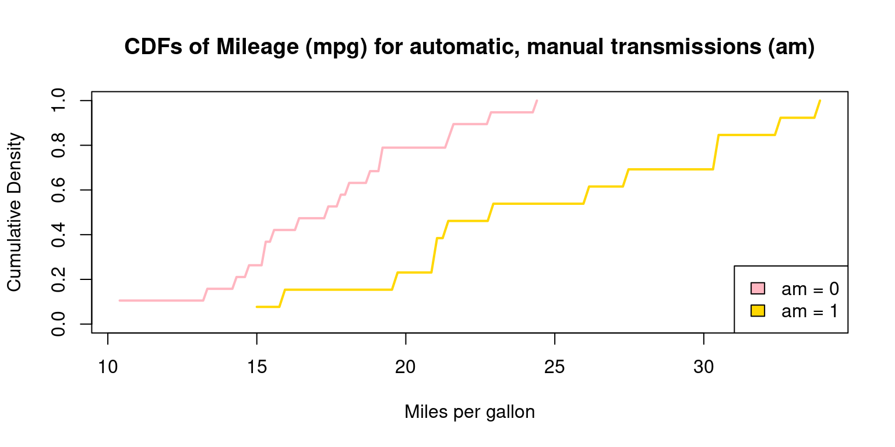

Aug 2, 2023. V1.7 -=- This chapter is being heavily edited – very much Work in Progress
Continuous Data Across Categories: Group-wise Statistics and Data Manipulation
This chapter takes us a step further in our exploration of continuous data. Here, we delve into the intersection of continuous data and categorical variables, examining how the former can be split, summarized, and compared across different levels of one or more categorical variables.
We bring to light methods for generating statistics per group and sophisticated data manipulation techniques. This includes processes like grouping, filtering, and summarizing continuous data, contingent on categorical variables. When it comes to visualizations, our focus shifts towards creating juxtaposed box plots, segmented histograms, and density plots that reveal the distribution of continuous data across varied categories.
To achieve this, we exemplify the use of libraries such as dplyr and ggplot2. Incorporating categorical variables into our analysis elevates the depth of our comprehension of the data. It allows us to shift from a broad, holistic view to a more concentrated inspection of specific data segments. This approach empowers us to produce a more granular and nuanced interpretation of our data.
Data: Let us work with the same mtcars data from the previous chapter. Suppose we have run the following code:
# Load the required libraries, suppressing annoying startup messageslibrary(tibble) suppressPackageStartupMessages(library(dplyr))# Read the mtcars dataset into a tibble called tbdata(mtcars)tb <-as_tibble(mtcars)attach(tb)# Convert several numeric columns into factor variablestb$cyl <-as.factor(tb$cyl)tb$vs <-as.factor(tb$vs)tb$am <-as.factor(tb$am)tb$gear <-as.factor(tb$gear)attach(tb)
The following objects are masked from tb (pos = 3):
am, carb, cyl, disp, drat, gear, hp, mpg, qsec, vs, wt
Summarizing Continuous Data by one Factor
Using aggregate()
We investigate the bivariate Relationship between Miles Per Gallon (mpg) and Cylinders (cyl). The following code will display a summary table showing the descriptive statistics of mileage of the cars broken down by number of cylinders (cyl = 4, 6, 8) using aggregate().
agg <-aggregate(tb$mpg, by =list("cyl"= tb$cyl), FUN = mean)names(agg) <-c("Cylinders", "Avg MPG")agg
The first argument in aggregate() is tb$mpg, which is the data vector we want to apply the function to.
The second argument, by, denotes a list of variables to group by. Here, we’ve supplied tb$cyl, implying that we wish to partition our data based on the unique values of cyl.
The third argument, FUN, is the function we want to apply to each subset of data. We’re using mean here, meaning we’re calculating the average mpg for each unique cyl value.
The output of aggregate(), a data frame, is then stored in a new variable, agg.
Next, we utilize the names() function to rename the columns in the agg data frame. [1]
Using tapply()
The tapply() function is a convenient tool that allows us to apply a function to subsets of a vector, as grouped by some factors.
tapply(tb$mpg, tb$cyl, mean)
4 6 8
26.66364 19.74286 15.10000
Discussion:
In this case, tapply(tb\(mpg, tb\)cyl, mean) is using the tapply() function to calculate the average miles per gallon (mpg) for each unique number of cylinders (cyl) within our tb tibble.
tb$mpg represents the vector to which we want to apply the function. This is the mpg column in our tb tibble.
tb$cyl serves as our grouping factor. We are partitioning our data based on the unique values within the cyl column in our tb tibble.
mean is the function that we’re applying to each subset of our data. Here, we’re calculating the mean mpg for each unique cyl value.
The result will be a vector where each element is the average mpg for a unique number of cylinders (cyl), as determined by the unique values of tb$cyl. [1]
Using psych::describeBy()
The library(psych) command instructs R to load the psych package. This is an extensive collection of functions for performing psychological, psychometric, and psychophysical research, and it provides a wide variety of statistical procedures not available in base R.
The describeBy() function comes from the psych package. It is used to compute descriptive statistics of a numeric variable (or a group of numeric variables), broken down by levels of a grouping variable.
library(psych)describeBy(mpg, cyl)
Descriptive statistics by group
group: 4
vars n mean sd median trimmed mad min max range skew kurtosis se
X1 1 11 26.66 4.51 26 26.44 6.52 21.4 33.9 12.5 0.26 -1.65 1.36
------------------------------------------------------------
group: 6
vars n mean sd median trimmed mad min max range skew kurtosis se
X1 1 7 19.74 1.45 19.7 19.74 1.93 17.8 21.4 3.6 -0.16 -1.91 0.55
------------------------------------------------------------
group: 8
vars n mean sd median trimmed mad min max range skew kurtosis se
X1 1 14 15.1 2.56 15.2 15.15 1.56 10.4 19.2 8.8 -0.36 -0.57 0.68
Discussion:
describeBy(mpg, cyl) computes descriptive statistics of the mpg (miles per gallon) variable, broken down by the unique values in the cyl (number of cylinders) variable.
In other words, it’s calculating statistics such as the mean, standard deviation, and quartiles for mpg, separately for each unique number of cylinders (cyl). [2]
Summarizing Continuous Data by two Factors
Using aggregate()
Distribution of Weight (wt) by Cylinders (cyl = {4,6,8}) and Transmisson Type (am = {0,1})
aggregate(wt, by =list("am"=am, "cyl"= cyl), mean)
We show a mean plot showing the mean weight of the cars broken down by Transmission Type (am=1 & am=0) & cylinders (cyl=4,6,8).
library(gplots)plotmeans(mpg ~interaction(am, cyl, sep =", ") , data = mtcars , mean.labels =TRUE , digits=2 , connect =FALSE , main ="Mean (mpg) by cyl = {4,6,8} & am = {0,1}" , xlab="cyl = {4,6,8} & am = {0,1}" , ylab="Average MPG" )

Stem-and-Leaf Plot of Continuous Data by one Factor
The provided R code first selects the mpg and cyl columns from tb, then it segments the data into groups based on cyl values, and lastly, it generates a stem-and-leaf plot for the mpg values in each separate group.
# Use the 'select()' function from 'dplyr' to choose 'mpg' and 'cyl' columns from 'tb' tibble. Assign the result to 'tb3'.tb3 <-select(tb, mpg, cyl)# Split the 'tb3' tibble into subsets based on 'cyl'. Each subset consists of rows with the same 'cyl' value. Save the list of these subsets to 'tb_split'.tb_split <-split(tb3, tb3$cyl)# Apply a function to each subset of 'tb_split' using 'lapply()'. # The function takes a subset 'x' and creates a stem-and-leaf plot of the 'mpg' values in 'x'.lapply(tb_split, function(x) stem(x$mpg))
The decimal point is 1 digit(s) to the right of the |
2 | 12334
2 | 67
3 | 0024
The decimal point is at the |
17 | 8
18 | 1
19 | 27
20 |
21 | 004
The decimal point is at the |
10 | 44
12 | 3
14 | 3702258
16 | 43
18 | 72
$`4`
NULL
$`6`
NULL
$`8`
NULL
Here is how it works:
tb3 <- select(tb, mpg, cyl): In this line, we’re using the select() function from the dplyr package to pick out the mpg and cyl columns from the tibble tb. We then store this newly created subset of the original tibble into a new tibble tb3.
tb_split <- split(tb3, tb3$cyl): With the split() function, we’re segmenting the tb3 tibble into subsets based on the cyl column. This action groups all rows with identical cyl values together into the same subset. We then store this list of new, smaller tibbles as tb_split.
lapply(tb_split, function(x) stem(x$mpg)): Here we employ the lapply() function to apply a specified function to each element within a list. The function we’ve elected to apply is function(x) stem(x$mpg), which plots a stem-and-leaf display for the mpg column of each tibble x in tb_split. As tb_split is a list of tibbles that have been grouped according to cyl values, this step will generate a separate stem-and-leaf plot for each group of cyl values.
References
[1] R Core Team (2020). R: A language and environment for statistical computing. R Foundation for Statistical Computing, Vienna, Austria.
Fox, J. and Weisberg, S. (2011). An R Companion to Applied Regression, Second Edition. Thousand Oaks CA: Sage.
[2] Revelle, W. (2020). psych: Procedures for Psychological, Psychometric, and Personality Research. Northwestern University, Evanston, Illinois. R package version 2.0.9. https://CRAN.R-project.org/package=psych
[10] Chambers, J. M., Freeny, A. E., & Heiberger, R. M. (1992). Analysis of variance; designed experiments. In Statistical Models in S (pp. 145–193). Pacific Grove, CA: Wadsworth & Brooks/Cole.